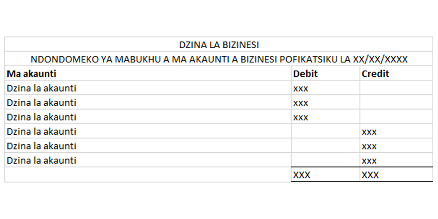

5.2 Format
Note: The account balance is the balance carried forward for that account on the date the trial balance is prepared. However, you'll note that the balance carried forward will be on the opposite side of the account in the general ledger. For example, the balance carried forward for the cash account is on the credit side and yet it is listed as a debit balance on the trial balance. In the general ledger, this is just for calculation purposes to make sure the total debits and total credits stay the same. As the balance is brought forward to the next month, it is placed on the debit side and so it will be a debit balance on the trial balance.